Sign in
- The doctor submits
POST /login/with a CSRF token. - django-axes checks whether the username is locked.
- Django checks the hashed password. A wrong one shows a general error.
- A secure session cookie lasts one day or until the browser closes.
Ward View is a simple, secure web app that shows every bed in a hospital ward on one screen, coloured by the doctor responsible for it. Doctors log in, see the whole ward, then admit, update or discharge patients.
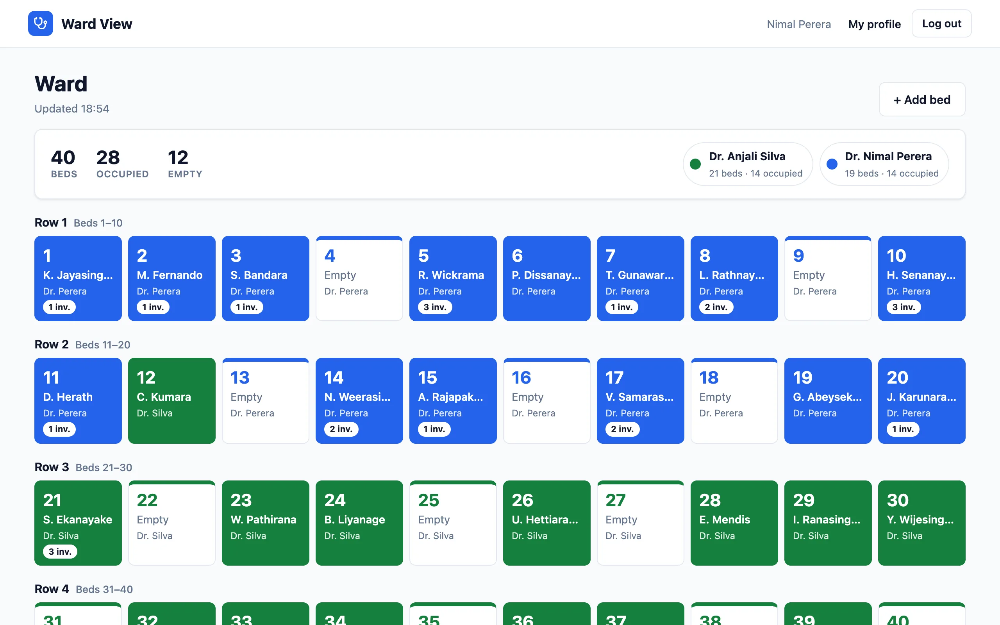
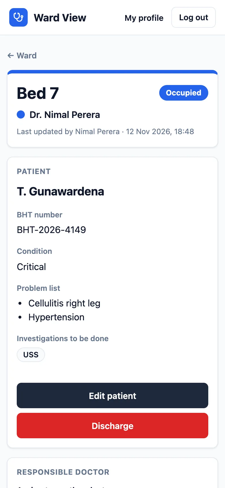
Two doctors share one ward of 40 beds. Nobody has a single, up-to-date picture of which bed belongs to which doctor, or which patient is lying in it.
One small Django website, protected by a login, replaces the paper list. Every change one doctor makes reaches the other doctor's screen within 30 seconds.
The main screens of the web app. Every screen works on a ward PC and on a phone at the bedside.
One account per doctor. Five wrong passwords lock the account for 30 minutes.
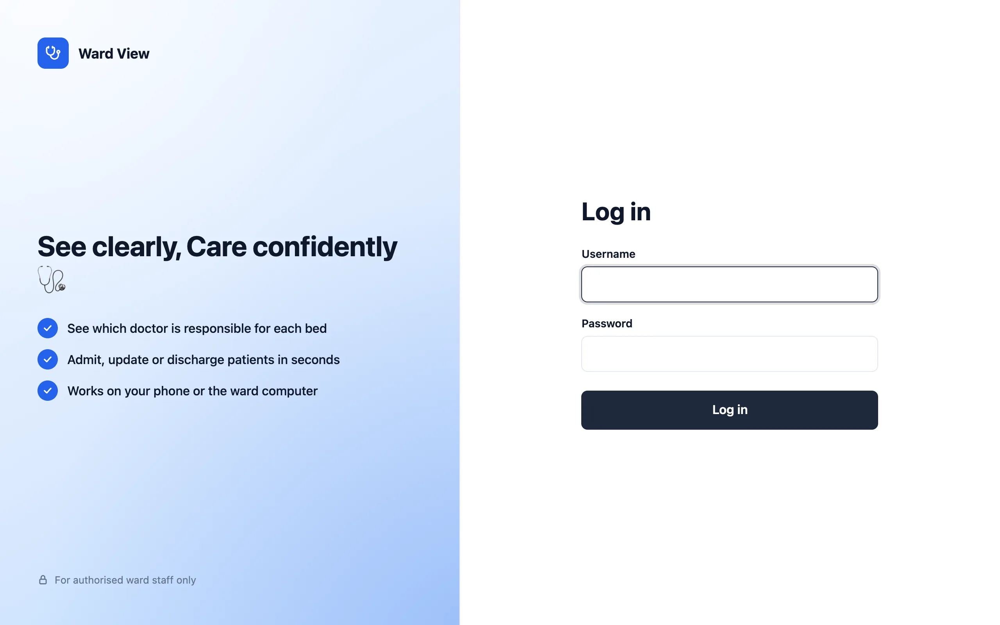
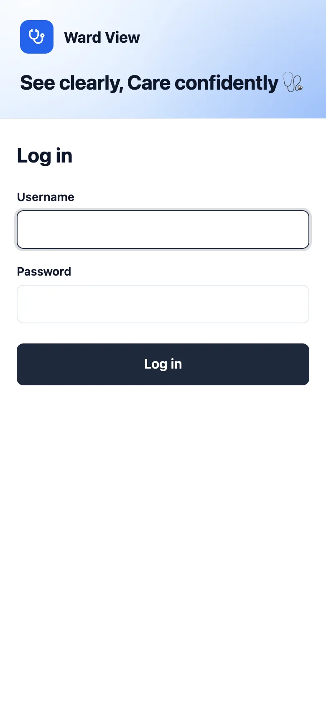
All beds in rows of ten, a colour key per doctor and live totals. The page refreshes every 30 seconds.
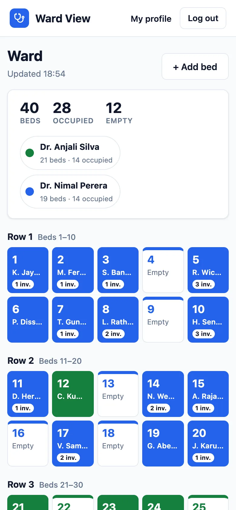
Patient details, who last changed the bed and when, plus Assign to me and Assign to another doctor.
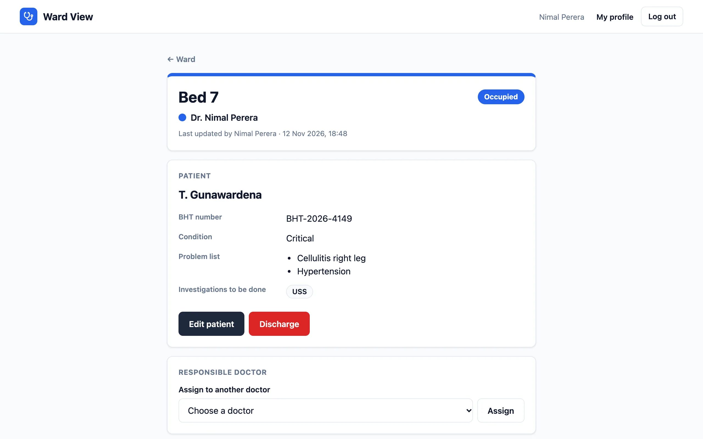
BHT number, name, condition, a problem list and investigations to be done as checkboxes.
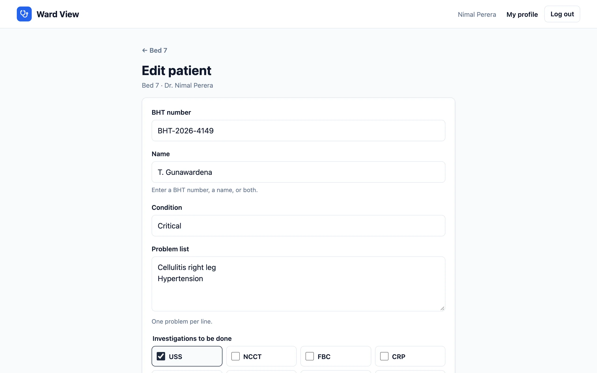
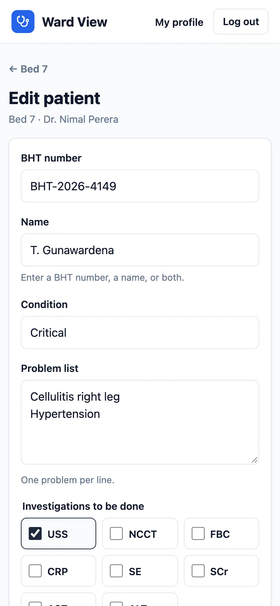
Discharge asks for confirmation, then clears every patient field. Nothing about the patient is kept.
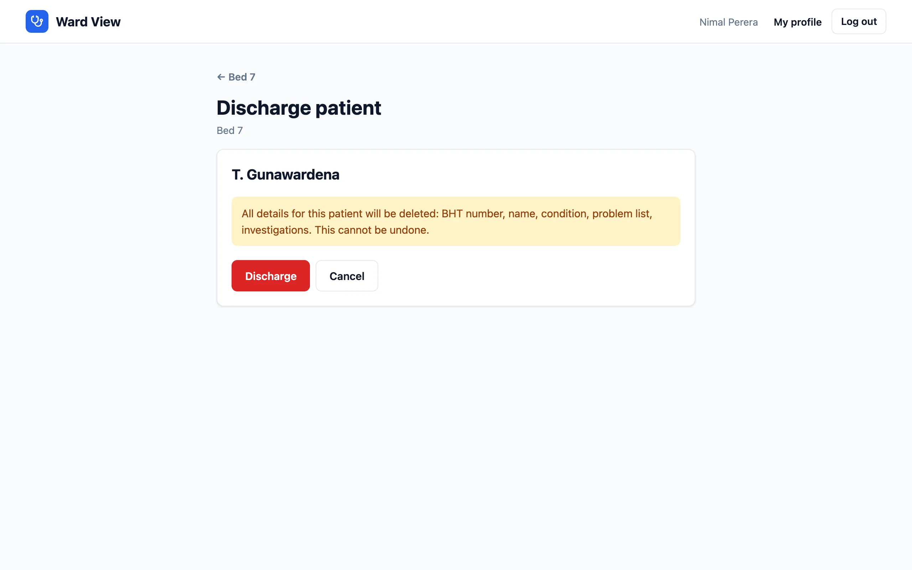
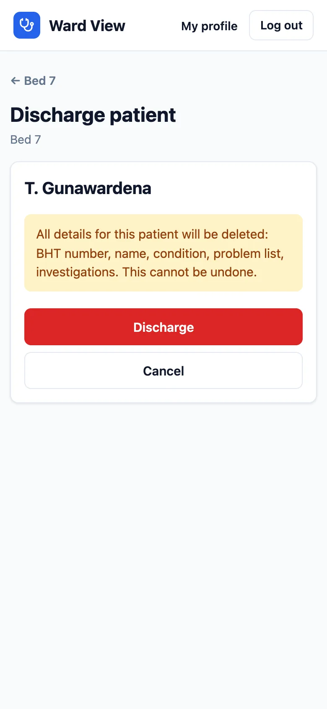
Each doctor picks a bed colour from a fixed palette. A colour already taken by a colleague cannot be chosen.
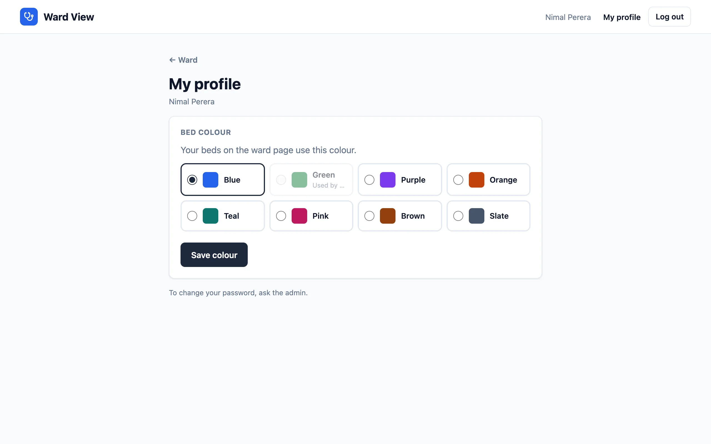
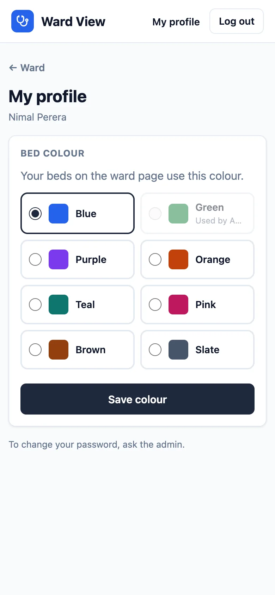
A small feature set for two doctors and one admin, kept simple enough to use during a ward round.
Personal accounts with passwords of at least 10 characters. Five wrong attempts lock the account for 30 minutes.
Every bed shows its number, patient and doctor:
The ward page refreshes every 30 seconds, so the other doctor's changes appear without reloading.
Admit, edit and discharge. Each change records who made it and when, in Sri Lanka time.
Assign to me or Assign to another doctor changes only the doctor. The patient stays and the bed changes colour.
Add, renumber or remove beds. A bed with a patient cannot be deleted until the patient is discharged.
The admin creates all 40 beds split between the doctors in one form, with no gaps or overlaps.
Discharge keeps nothing. Pages are never indexed by search engines, and admin history never shows patient details.
One Django app does everything: pages, login, admin and database access. There is no separate frontend and no JavaScript framework.
Four flows show how data moves through the system: signing in, recording a patient, handing over a bed and discharging.
POST /login/ with a CSRF token./beds/<n>/patient/ and fills in the form.POST /beds/<n>/assign-me/ or /reassign/ is sent.GET /beds/<n>/discharge/ shows a confirmation page.POST discharges the patient.Open-source tools with free hosting tiers.